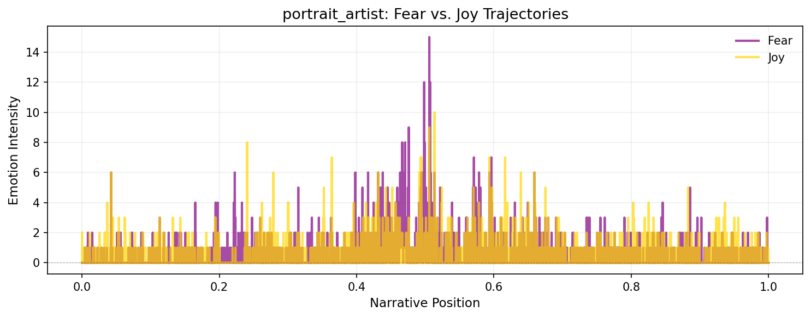
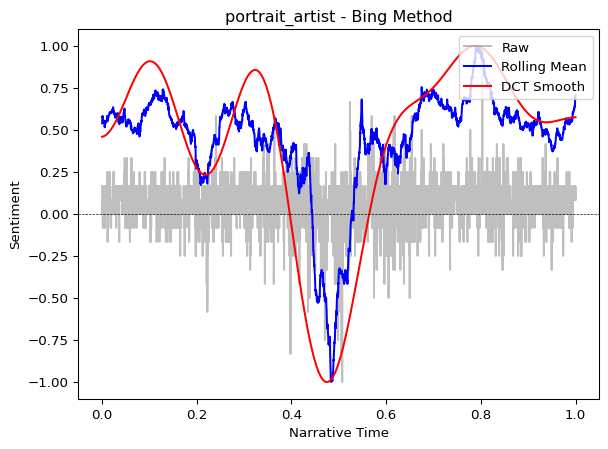

from moodswing import (
DictionarySentimentAnalyzer,
Sentencizer,
DCTTransform,
load_sample_text,
prepare_trajectory,
trajectory_to_dataframe
)
from moodswing.lexicons import LexiconLoader
import pandas as pdUsing sentiment lexicons
Dictionary-based sentiment analysis uses lexicons—lists of words paired with numeric scores that indicate whether each word feels positive, negative, or neutral. This approach is fast, transparent, and widely used in literary analysis and digital humanities research.
What is a sentiment lexicon?
A sentiment lexicon (also called a sentiment dictionary) is essentially a lookup table. Each word has a score:
- Positive values indicate pleasant, happy, or optimistic words
- Negative values indicate unpleasant, sad, or pessimistic words
- Zero indicates neutral words (or words not in the dictionary)
For example, a lexicon might assign:
| Word | Score |
|---|---|
| joy | +0.8 |
| happy | +0.7 |
| sad | -0.6 |
| terrible | -0.9 |
| the | 0.0 |
When analyzing a sentence like “I feel happy today”, the analyzer tokenizes it into words, looks up each word’s score, and sums them. The moodswing package includes four widely-used lexicons from the R syuzhet package, each with different strengths.
Setup
Let’s import the tools we’ll use throughout this guide:
# Create the analyzer that will score our sentences
analyzer = DictionarySentimentAnalyzer()
sentencizer = Sentencizer()The four included lexicons
Syuzhet
The Syuzhet lexicon was created specifically for narrative analysis by Matthew Jockers. It assigns sentiment values optimized for tracking emotional arcs in fiction.
# Load the Syuzhet lexicon to examine it
loader = LexiconLoader()
syuzhet_lex = loader.load("syuzhet")
# Show some example entries
sample_words = ["love", "hate", "joy", "fear", "hope", "despair", "gentle", "cruel"]
syuzhet_samples = {word: syuzhet_lex.score(word) for word in sample_words}
pd.DataFrame(syuzhet_samples.items(), columns=["Word", "Score"])| Word | Score | |
|---|---|---|
| 0 | love | 0.75 |
| 1 | hate | -0.75 |
| 2 | joy | 0.75 |
| 3 | fear | -0.75 |
| 4 | hope | 0.50 |
| 5 | despair | -0.75 |
| 6 | gentle | 1.00 |
| 7 | cruel | -1.00 |
When to use Syuzhet: Best for analyzing novels, short stories, and other narrative texts. It’s the default method and was designed specifically for plotting emotional trajectories.
AFINN
The AFINN lexicon, created by Finn Årup Nielsen, rates words on an integer scale from -5 (most negative) to +5 (most positive). Originally designed for social media text, it includes informal language and slang.
# Load and examine AFINN
afinn_lex = loader.load("afinn")
# Show some example entries
afinn_samples = {word: afinn_lex.score(word) for word in sample_words}
pd.DataFrame(afinn_samples.items(), columns=["Word", "Score"])| Word | Score | |
|---|---|---|
| 0 | love | 3.0 |
| 1 | hate | -3.0 |
| 2 | joy | 3.0 |
| 3 | fear | -2.0 |
| 4 | hope | 2.0 |
| 5 | despair | -3.0 |
| 6 | gentle | 0.0 |
| 7 | cruel | -3.0 |
When to use AFINN: Good for informal texts, social media content, or when you need a simple integer scale. The -5 to +5 range makes scores easy to interpret.
Bing
The Bing lexicon (from Bing Liu’s work at UIC) is binary: words are either positive (+1) or negative (-1). It contains no neutral words—every entry is clearly polarized.
# Load and examine Bing
bing_lex = loader.load("bing")
# Show some example entries
bing_samples = {word: bing_lex.score(word) for word in sample_words}
pd.DataFrame(bing_samples.items(), columns=["Word", "Score"])| Word | Score | |
|---|---|---|
| 0 | love | 1.0 |
| 1 | hate | -1.0 |
| 2 | joy | 1.0 |
| 3 | fear | -1.0 |
| 4 | hope | 0.0 |
| 5 | despair | -1.0 |
| 6 | gentle | 1.0 |
| 7 | cruel | -1.0 |
When to use Bing: Use when you want clear-cut positive/negative categorization without nuanced gradations. Good for opinion mining and when subtlety isn’t critical.
NRC
The NRC Emotion Lexicon (from Saif Mohammad and Peter Turney) is unique: it maps words to multiple emotions (anger, fear, joy, sadness, etc.) plus overall positive/negative sentiment. This allows richer emotional analysis beyond simple valence.
# Load NRC as an emotion lexicon
nrc_lex = loader.load("nrc")
# NRC provides categorical emotions, not just positive/negative
# Let's look at the emotions for a single word
print("Emotions associated with 'love':")
print(nrc_lex.emotions_for("love"))Emotions associated with 'love':
{'positive': 1.0, 'joy': 1.0}# Show available emotion categories
print("\nAll NRC emotion categories:")
print(nrc_lex.categories)
All NRC emotion categories:
('anger', 'anticipation', 'disgust', 'fear', 'joy', 'negative', 'positive', 'sadness', 'surprise', 'trust')When to use NRC: Use when you want to track multiple emotional dimensions simultaneously (fear vs. joy, anger vs. trust). Ideal for research questions about specific emotions rather than just overall positivity/negativity.
Multilingual support: Unlike the other lexicons, NRC is available in multiple languages. You can specify the language parameter when loading or scoring:
# Load NRC in French
nrc_french = loader.load("nrc", language="french")
# Check a French word
print("Emotions for 'amour' (love in French):")
print(nrc_french.emotions_for("amour"))Emotions for 'amour' (love in French):
{'positive': 1.0, 'anticipation': 1.0, 'joy': 1.0, 'trust': 1.0}Comparison with R
While this package is based on Jockers’ R package, note that even if you use the same lexicon, the outputs will not be precisely the same. This is because sentence splitting and tokenization do not follow the exact same procedures, and the outputs can therefore be different. That said, even with those caveats, results are remarkably similar when the same transformation formulae are used. Consider the example of Madame Bovary plotted from R and Python outputs.
import matplotlib.pyplot as plt
import numpy as np
# R syuzhet output (DCT transform with 100 points)
time = np.linspace(0, 1, 100)
r_dct = [1.000, 0.997, 0.992, 0.985, 0.975, 0.963, 0.948, 0.932, 0.913, 0.893,
0.870, 0.847, 0.821, 0.795, 0.768, 0.740, 0.711, 0.682, 0.653, 0.624,
0.595, 0.567, 0.539, 0.512, 0.486, 0.461, 0.438, 0.416, 0.395, 0.376,
0.359, 0.344, 0.331, 0.319, 0.310, 0.302, 0.296, 0.292, 0.290, 0.289,
0.289, 0.291, 0.295, 0.299, 0.304, 0.310, 0.316, 0.323, 0.329, 0.336,
0.342, 0.347, 0.351, 0.355, 0.357, 0.357, 0.356, 0.353, 0.348, 0.340,
0.330, 0.318, 0.303, 0.286, 0.266, 0.243, 0.217, 0.189, 0.158, 0.124,
0.088, 0.050, 0.009, -0.033, -0.078, -0.124, -0.171, -0.220, -0.269, -0.319,
-0.370, -0.420, -0.470, -0.520, -0.568, -0.615, -0.661, -0.705, -0.747, -0.787,
-0.823, -0.857, -0.888, -0.915, -0.939, -0.959, -0.975, -0.988, -0.996, -1.000]
# Python moodswing output
doc_id, text = load_sample_text("madame_bovary")
sentences = sentencizer.split(text)
scores = analyzer.sentence_scores(sentences, method="syuzhet")
trajectory = prepare_trajectory(
scores,
dct_transform=DCTTransform(
low_pass_size=5,
output_length=100,
scale_range=True
),
)
py_dct = trajectory.dctfig, (ax1, ax2) = plt.subplots(1, 2, figsize=(14, 4), dpi=150, sharey=True)
# R output
ax1.plot(time, r_dct, color='#E63946', linewidth=2.5)
ax1.axhline(0, color='black', linewidth=0.5, linestyle='--', alpha=0.3)
ax1.set_xlabel('Narrative Position', fontsize=11)
ax1.set_ylabel('Sentiment', fontsize=11)
ax1.set_title('R syuzhet Package', fontsize=12, fontweight='bold')
ax1.grid(True, alpha=0.2)
# Python output
ax2.plot(time, py_dct, color='#457B9D', linewidth=2.5)
ax2.axhline(0, color='black', linewidth=0.5, linestyle='--', alpha=0.3)
ax2.set_xlabel('Narrative Position', fontsize=11)
ax2.set_title('Python moodswing Package', fontsize=12, fontweight='bold')
ax2.grid(True, alpha=0.2)
fig.suptitle('Madame Bovary: R vs Python DCT Trajectories', fontsize=14, fontweight='bold')
plt.tight_layout()
plt.show()
The overall shapes are nearly identical—both show the classic descent from positive to negative—but subtle differences may arise from how each implementation tokenizes words and splits sentences. For research reproducibility, document which implementation you use.
Cross-platform consistency
If you need identical results between R and Python for a specific project, consider:
- Pre-tokenizing text in a standardized way before analysis
- Using the same sentence splitting rules (e.g., export NLTK’s Punkt output)
- Explicitly documenting your preprocessing pipeline
For most narrative analysis purposes, these minor differences don’t affect interpretation of the overall emotional arc.
Comparing lexicons on the same text
Let’s see how different lexicons score the same passage:
sample_passage = """
The day began with brilliant sunshine and cheerful birdsong.
Children laughed as they played in the park. But storm clouds gathered,
and by evening a terrible darkness had fallen. Fear gripped the town
as thunder crashed overhead.
"""
# Split into sentences
sentences = sentencizer.split(sample_passage)
print(f"Number of sentences: {len(sentences)}\n")
# Score with each lexicon
methods = ["syuzhet", "afinn", "bing"]
results = {}
for method in methods:
scores = analyzer.sentence_scores(sentences, method=method)
results[method] = scores
print(f"{method.upper()} scores: {scores}")
print(f" Total: {sum(scores):.2f}\n")Number of sentences: 4
SYUZHET scores: [2.25, 0.8, -2.25, -1.35]
Total: -0.55
AFINN scores: [8.0, 1.0, -6.0, -2.0]
Total: 1.00
BING scores: [2.0, 0.0, -3.0, -2.0]
Total: -3.00
Notice how the lexicons produce different scores but similar patterns—all recognize the shift from positive (sunshine, cheerful) to negative (terrible, fear) sentiment.
Working with NRC emotions
The NRC lexicon offers a different approach: instead of a single sentiment score, you can track multiple emotional dimensions:
# Use the nrc_emotions method to get categorical breakdowns
emotion_results = analyzer.nrc_emotions(sentences)
# Convert to DataFrame for easy viewing
emotions_df = pd.DataFrame(emotion_results)
emotions_df.index = [f"Sentence {i+1}" for i in range(len(sentences))]
emotions_df| anger | anticipation | disgust | fear | joy | negative | positive | sadness | surprise | trust | |
|---|---|---|---|---|---|---|---|---|---|---|
| Sentence 1 | 0.0 | 1.0 | 0.0 | 0.0 | 3.0 | 0.0 | 3.0 | 0.0 | 1.0 | 1.0 |
| Sentence 2 | 0.0 | 0.0 | 0.0 | 0.0 | 0.0 | 0.0 | 0.0 | 0.0 | 0.0 | 0.0 |
| Sentence 3 | 3.0 | 0.0 | 1.0 | 2.0 | 0.0 | 3.0 | 0.0 | 2.0 | 0.0 | 0.0 |
| Sentence 4 | 1.0 | 0.0 | 0.0 | 1.0 | 0.0 | 1.0 | 0.0 | 0.0 | 0.0 | 0.0 |
# Visualize the emotional profile of the entire passage
total_emotions = emotions_df.sum()
total_emotions.sort_values(ascending=False).head(8)anger 4.0
negative 4.0
joy 3.0
fear 3.0
positive 3.0
sadness 2.0
anticipation 1.0
disgust 1.0
dtype: float64This reveals that the passage triggers fear, negative sentiment, and sadness most strongly, with some positive and joy from the opening. This nuanced view can help identify which specific emotions drive a text’s overall trajectory.
Plotting emotion trajectories
You can track how specific emotions evolve across a narrative by plotting their trajectories over time:
import matplotlib.pyplot as plt
import numpy as np
# Get emotions for entire novel
doc_id_emo, text_emo = load_sample_text("portrait_artist")
sentences_emo = sentencizer.split(text_emo)
emotions_all = analyzer.nrc_emotions(sentences_emo)
# Convert to DataFrame
emotions_df_all = pd.DataFrame(emotions_all)
# Plot fear and joy trajectories
fig, ax = plt.subplots(figsize=(10, 4), dpi=150)
positions = np.linspace(0, 1, len(emotions_df_all))
ax.plot(positions, emotions_df_all['fear'], label='Fear', color='purple', linewidth=2, alpha=0.7)
ax.plot(positions, emotions_df_all['joy'], label='Joy', color='gold', linewidth=2, alpha=0.7)
ax.axhline(0, color='black', linewidth=0.5, linestyle='--', alpha=0.3)
ax.set_xlabel('Narrative Position', fontsize=11)
ax.set_ylabel('Emotion Intensity', fontsize=11)
ax.set_title(f'{doc_id_emo}: Fear vs. Joy Trajectories', fontsize=13)
ax.legend(frameon=False)
ax.grid(True, alpha=0.2)
plt.tight_layout()
plt.show()
You can smooth these emotion trajectories using prepare_trajectory() and trajectory_to_dataframe() just like sentiment scores, enabling sophisticated multi-dimensional emotional analysis.
Analyzing mixed messages
Sometimes texts send conflicting emotional signals—mixing positive and negative words in ways that create ambiguity or irony. The mixed_messages() method uses Shannon entropy to quantify this emotional complexity:
# Compare a straightforward negative text vs. a mixed one
straightforward = "The terrible, awful, horrible disaster was devastating and tragic."
mixed = "The celebration was bittersweet; joy mixed with sorrow as we remembered those absent."
print("Straightforward negative text:")
result_fwd = analyzer.mixed_messages(straightforward, method="syuzhet")
print(f" Entropy: {result_fwd.entropy:.3f}")
print(f" Normalized entropy: {result_fwd.normalized_entropy:.3f}")
print("\nMixed emotional signals:")
result_mix = analyzer.mixed_messages(mixed, method="syuzhet")
print(f" Entropy: {result_mix.entropy:.3f}")
print(f" Normalized entropy: {result_mix.normalized_entropy:.3f}")Straightforward negative text:
Entropy: 0.000
Normalized entropy: 0.000
Mixed emotional signals:
Entropy: 1.000
Normalized entropy: 0.077Higher entropy indicates more emotional mixing—the second passage scores higher entropy because it balances positive (“celebration,” “joy”) and negative (“bittersweet,” “sorrow”) terms. This can help identify:
- Ironic or sarcastic passages (positive words in negative contexts)
- Complex emotional moments in narratives
- Turning points where sentiment is genuinely conflicted
Visualizing a complete trajectory
Now let’s score an entire novel and plot its emotional arc:
from moodswing import prepare_trajectory, plot_trajectory, DCTTransform
from moodswing.data import load_sample_text
# Load a sample novel
doc_id, text = load_sample_text("portrait_artist")
print(f"Analyzing: {doc_id}")
# Split into sentences
sentences = sentencizer.split(text)
print(f"Total sentences: {len(sentences)}")Analyzing: portrait_artist
Total sentences: 5372# Compare Syuzhet vs. Bing lexicons
syuzhet_scores = analyzer.sentence_scores(sentences, method="syuzhet")
bing_scores = analyzer.sentence_scores(sentences, method="bing")
# Prepare trajectories with smoothing
trajectory_syuzhet = prepare_trajectory(
syuzhet_scores,
rolling_window=int(len(syuzhet_scores) * 0.05),
dct_transform=DCTTransform(low_pass_size=10, output_length=200, scale_range=True)
)
trajectory_bing = prepare_trajectory(
bing_scores,
rolling_window=int(len(bing_scores) * 0.05),
dct_transform=DCTTransform(low_pass_size=10, output_length=200, scale_range=True)
)/tmp/ipykernel_2772/189807586.py:6: UserWarning:
DCT transform already has scaling enabled (scale_range=True, scale_values=False). Skipping additional normalization of DCT output to prevent double-scaling. Raw and rolling components are still normalized.
/tmp/ipykernel_2772/189807586.py:12: UserWarning:
DCT transform already has scaling enabled (scale_range=True, scale_values=False). Skipping additional normalization of DCT output to prevent double-scaling. Raw and rolling components are still normalized.
plot_trajectory(trajectory_syuzhet, title=f"{doc_id} - Syuzhet Method")
plot_trajectory(trajectory_bing, title=f"{doc_id} - Bing Method")
Both lexicons reveal similar overall patterns (the general “shape” of the story), though the Syuzhet lexicon often produces smoother curves because it was designed specifically for narrative analysis.
Show only the smoothed arc
For presentations or cleaner visualizations, use the components parameter to display only the DCT smoothed line:
plot_trajectory(trajectory_syuzhet, components=["dct"], title="Emotional Arc")This removes visual clutter and focuses attention on the overall narrative shape.
Performance tips
When processing many texts or very long documents, preload the lexicon once rather than reloading it for each call:
# Efficient: Load once, reuse many times
syuzhet_lex = loader.load("syuzhet")
# Now process multiple documents without reloading
texts_to_process = ["Text 1...", "Text 2...", "Text 3..."]
for text in texts_to_process:
sents = sentencizer.split(text)
# Pass the preloaded lexicon
scores = analyzer.sentence_scores(sents, lexicon=syuzhet_lex)
# ... continue processingChoosing the right lexicon
| Lexicon | Best for | Pros | Cons |
|---|---|---|---|
| Syuzhet | Novels, narratives | Optimized for storytelling | English only |
| AFINN | Social media, informal text | Includes slang, simple scale | English only, integer scores |
| Bing | Opinion mining, reviews | Clear binary classification | English only, no gradation |
| NRC | Emotion-focused analysis | Multi-dimensional emotions, multilingual | More complex to interpret |
Start with Syuzhet
For narrative analysis, start with the Syuzhet method (the default). It was designed specifically for tracking emotional arcs in stories and typically produces the most interpretable trajectories for literary texts.
Language support
The Syuzhet, AFINN, and Bing lexicons are English-only. The NRC lexicon supports multiple languages including English, French, Spanish, German, Arabic, and more. Specify the language parameter when loading NRC or using nrc_emotions():
analyzer.nrc_emotions(sentences, language="spanish")Next steps
- Learn about using spaCy for sentiment as an alternative to dictionaries
- Explore the technical details of the DCT transformation
- Check the API reference for complete documentation